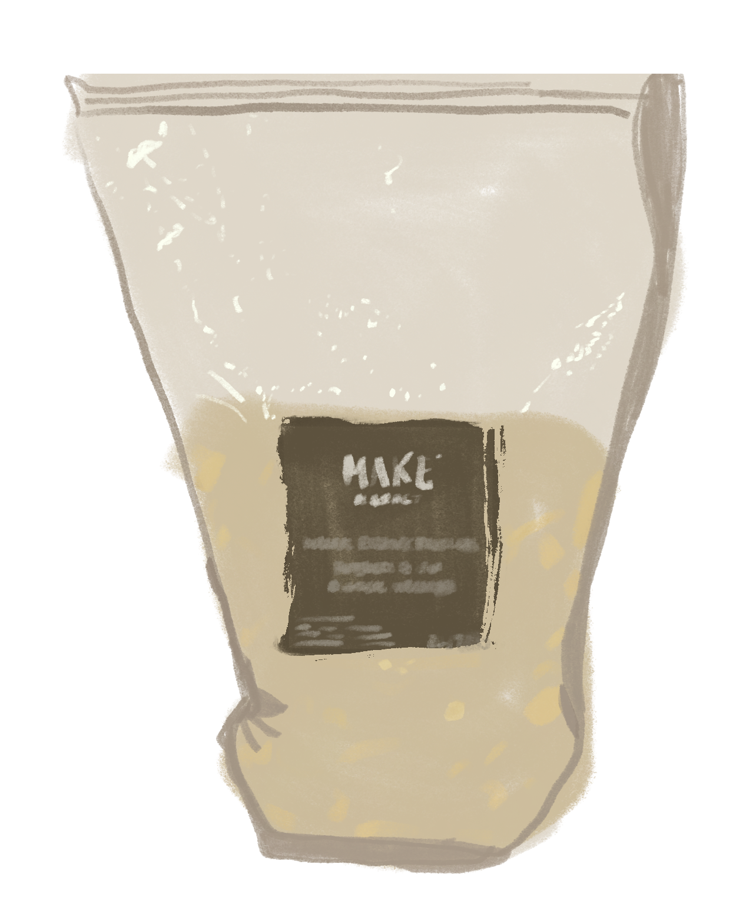
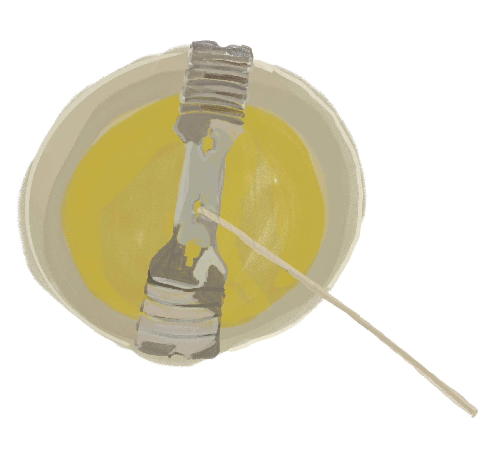
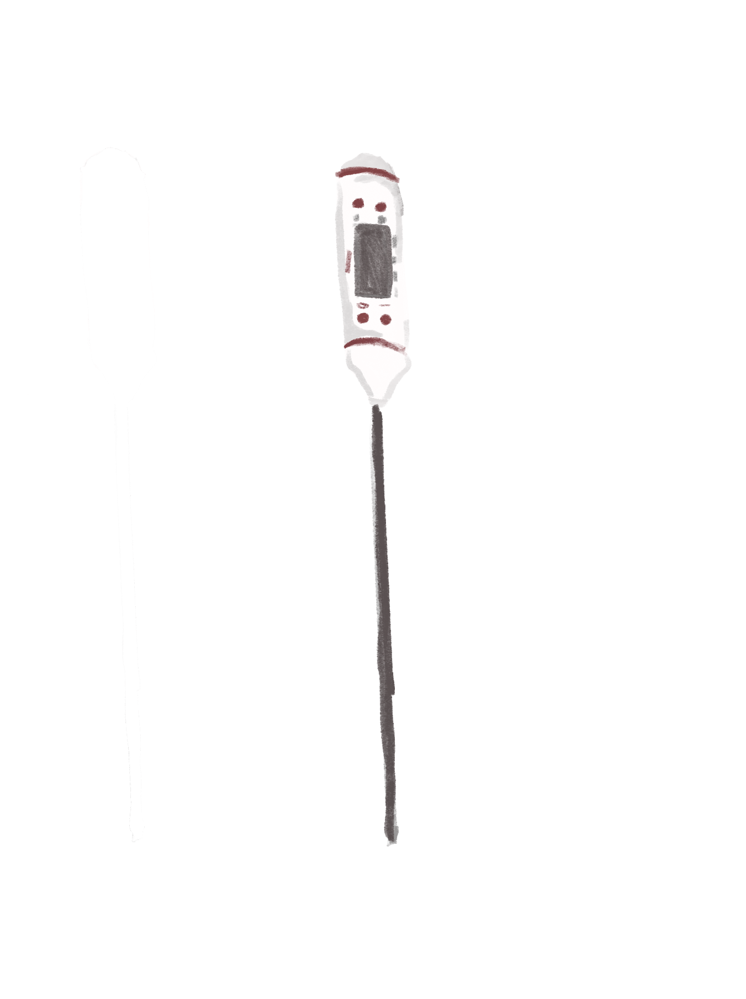
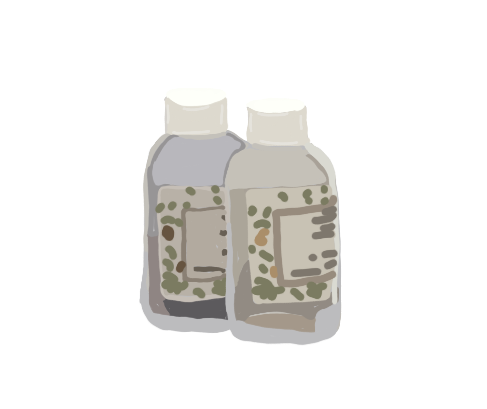
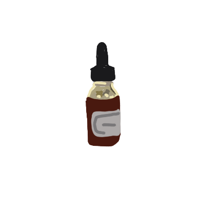
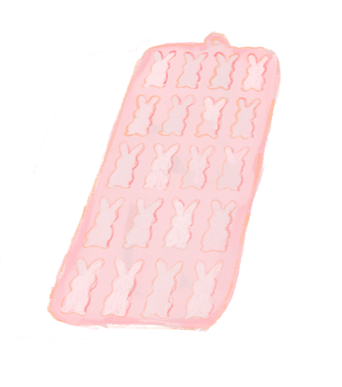

process
Making a candle is a slow process. Each step affects the final burn, scent, and surface.
1. measure wax
Measure your wax based on how many candles you are making. For example, four 8 oz candles require 32 oz of wax.

2. melt wax
Melt the wax slowly to around 170°F. Do not overheat. Stir gently so it melts evenly.

3. check temperature
Let the wax cool to around 160°F before adding fragrance. A thermometer is important here.

4. add fragrance
Add 5–7% fragrance oil depending on how strong you want it. Stir for about 2 minutes.

5. add dye (optional)
Add dye if desired and stir the same way as fragrance to fully combine it with the wax.

6. make moulds
Pour wax into moulds like bunnies or hearts. Let them fully cool before removing.

7. final candle
After the candle cures overnight, attach moulds by slightly melting their base and pressing them onto the top.

If you encounter any problems during this process, visit the fixes page for solutions.